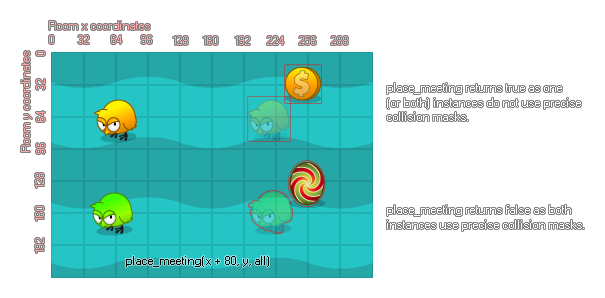

Con esta función, puede verificar una posición para una colisión con otra instancia o todas las instancias de un objeto usando la máscara de colisión de la instancia que ejecuta el código para la verificación. Cuando usa esto, le está pidiendo efectivamente a GameMaker Studio 2 que mueva la instancia a la nueva posición, verifique si hay una colisión, retroceda y le diga si se encontró una colisión o no. Esto funcionará para colisiones precisas, pero solo si tanto la instancia como el objeto que se está comprobando tienen máscaras de colisión precisas seleccionadas, de lo contrario solo se aplicarán colisiones de recuadro delimitador. Esta función también acepta las palabras clave especiales todos y otros. Tenga en cuenta que si necesita obtener la ID de instancia única del objeto con el que se colisionó, debe usar instance_place. 
Tenga en cuenta que las coordenadas x / y proporcionadas se desplazarán al entero más cercano antes de que se realice la comprobación.
place_meeting(x, y, obj);
| Argumento | Descripción |
|---|---|
| x | La posición x para comprobar. |
| y | La posición y para comprobar. |
| obj | La instancia o el objeto para comprobar. |
Boolean
if keyboard_check(vk_left)
{
if !place_meeting(x - 5, y, obj_wall) x -=5;
}
El código anterior comprueba para ver si no hay una colisión a la izquierda de la instancia y mueve la instancia si no hay ninguno.